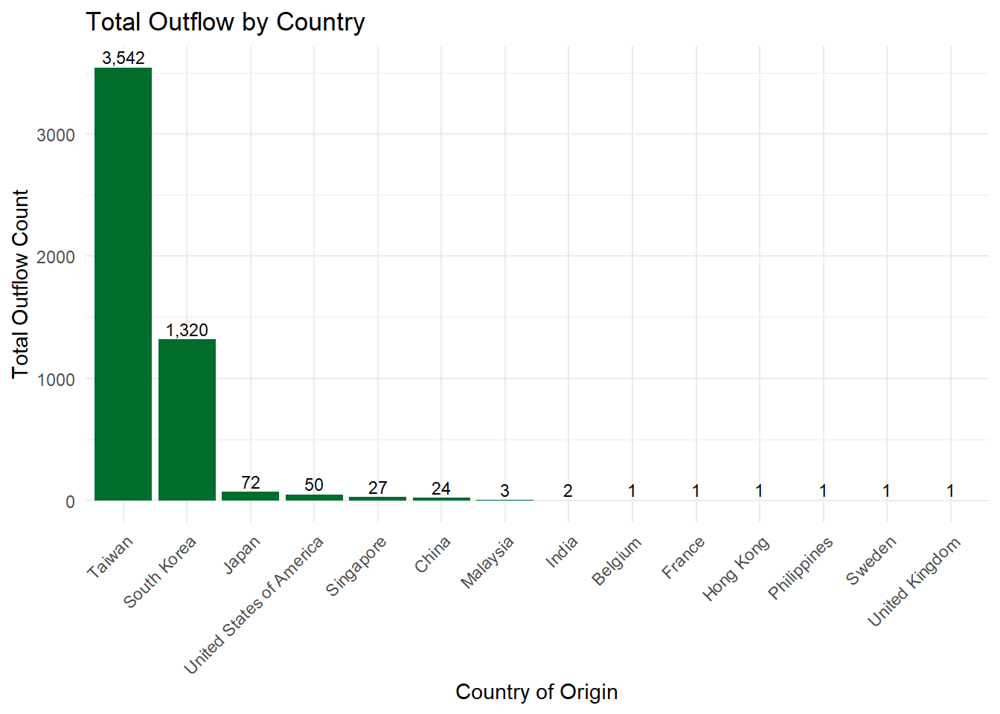
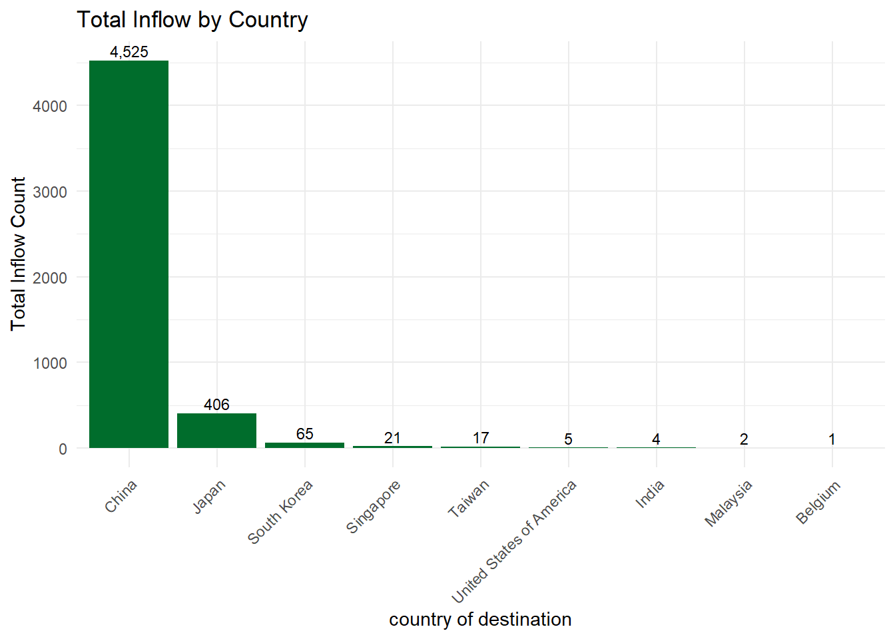
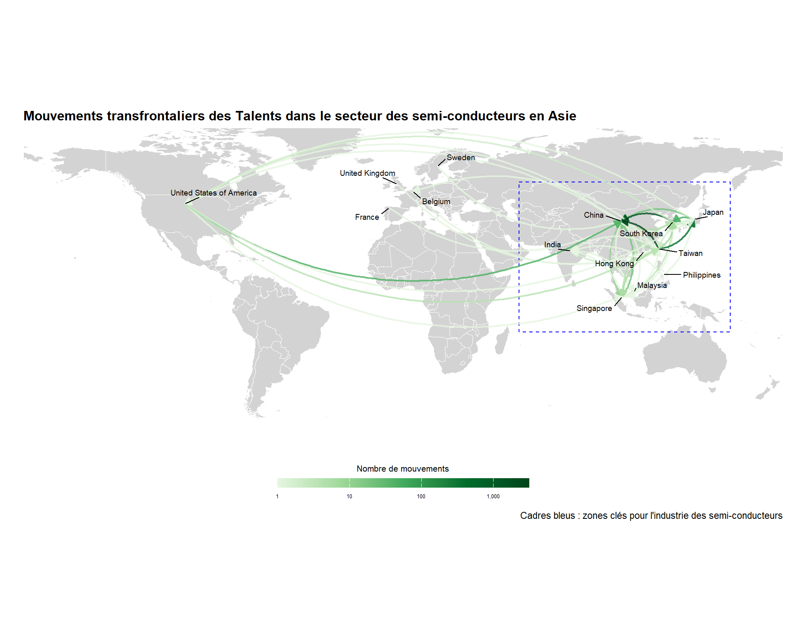
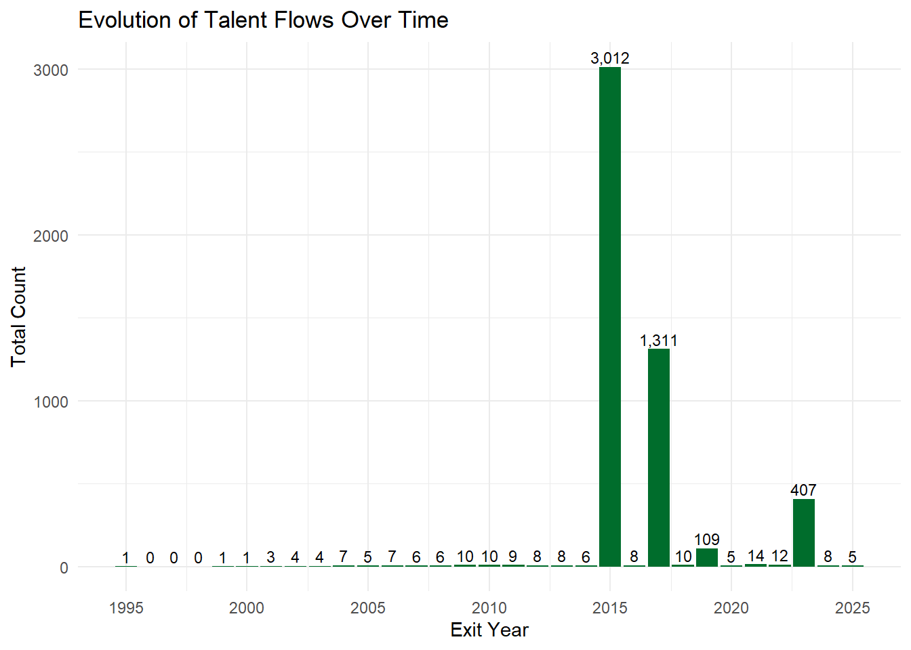
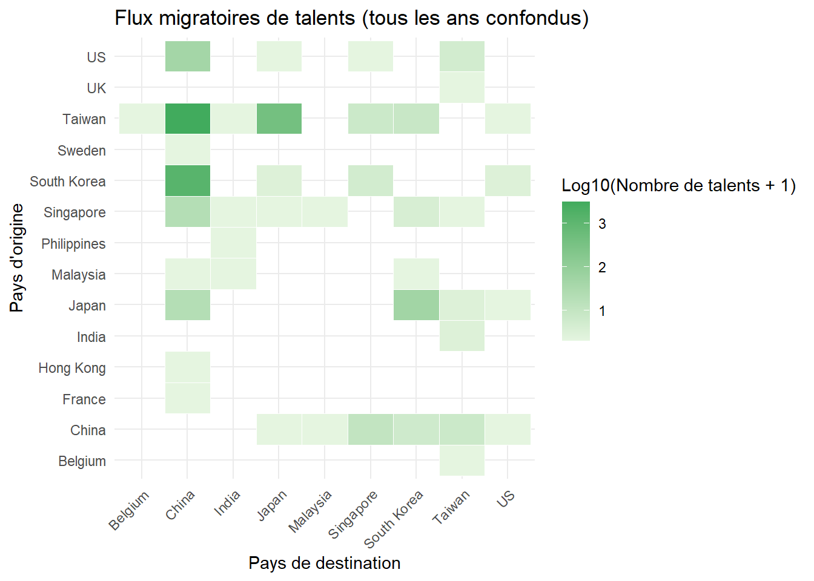
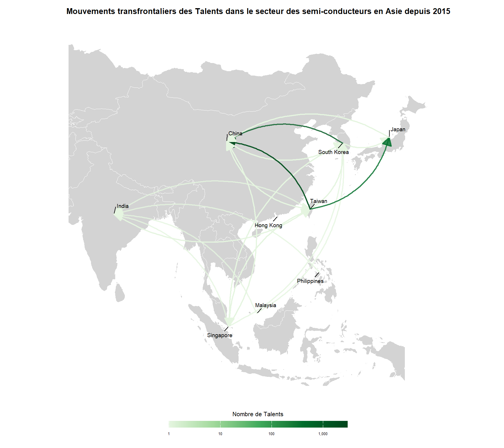

── Conflicts ────────────────────────────────────────── tidyverse_conflicts() ──
✖ dplyr::filter() masks stats::filter()
✖ dplyr::lag() masks stats::lag()
ℹ Use the conflicted package (<http://conflicted.r-lib.org/>) to force all conflicts to become errors
library(rnaturalearth)library(sf)
Linking to GEOS 3.13.0, GDAL 3.10.1, PROJ 9.5.1; sf_use_s2() is TRUE
library(ggrepel)library(plm)
Attachement du package : 'plm'
Les objets suivants sont masqués depuis 'package:dplyr':
between, lag, lead
library(modelsummary)library(kableExtra)
Attachement du package : 'kableExtra'
L'objet suivant est masqué depuis 'package:dplyr':
group_rows
# Ajouter une nouvelle colonne : nombre d'ingénieursmigration_data$num_engineer <-1migration_data$num_engineer[78] <-100migration_data$num_engineer[79] <-3000migration_data$num_engineer[80] <-1300migration_data$num_engineer[81] <-49migration_data$num_engineer[82] <-400
Analyse descriptive
# Compter le nombre total de mobilisations entre différents paysmigration_data$num_move <-0mobilizations <-c()for(i in1:nrow(migration_data)) { countries <-as.character(unlist(migration_data[i, c("Country(1)", "Country(2)", "Country(3)", "Country(4)", "Country(5)", "Country(6)", "Country(7)")]))for(j in1:6) {if(!is.na(countries[j]) &&!is.na(countries[j+1]) && countries[j] != countries[j+1]) { migration_data[i, "num_move"] <- migration_data[i, "num_move"] +1 move <-paste(countries[j], "->", countries[j+1]) count_rep <- migration_data$num_engineer[i] mobilizations <-c(mobilizations, rep(move, count_rep)) } }}mobilization_table <-table(mobilizations)migration_count_between_country <-as.data.frame(mobilization_table)colnames(migration_count_between_country) <-c("mobilization", "count")# Diviser la colonne 'mobilization' en deux colonnes ('from' et 'to')# puis normaliser les noms des pays pour faciliter l'analyse futuremigration_count_between_country <- migration_count_between_country |>separate(mobilization, into =c("from", "to"), sep =" -> ") |>mutate(from =str_trim(from), to =str_trim(to)) |>mutate(from =case_when( from =="US"~"United States of America", from =="UK"~"United Kingdom",TRUE~ from ),to =case_when( to =="US"~"United States of America", to =="UK"~"United Kingdom",TRUE~ to ) )
Graphique 1 : Flux de talents par pays — entrants vs sortants (barres groupées)
library(ggplot2)# 1) Flux sortants par pays d'originetotal_outflow_country <- migration_count_between_country |>group_by(from) |>summarise(total_count =sum(count), .groups ="drop") |>rename(country_of_origin = from)ggplot(total_outflow_country, aes(x =reorder(country_of_origin, -total_count), y = total_count)) +geom_bar(stat ="identity", fill ="#006D2C") +geom_text(aes(label = scales::comma(total_count)), vjust =-0.3, size =3) +labs(title ="Total Outflow by Country",x ="Country of Origin",y ="Total Outflow Count") +theme_minimal() +theme(axis.text.x =element_text(angle =45, hjust =1))

# 2) Flux entrants par pays de destinationtotal_inflow_country <- migration_count_between_country |>group_by(to) |>summarise(total_count =sum(count), .groups ="drop") |>rename(country_of_destination = to)ggplot(total_inflow_country, aes(x =reorder(country_of_destination, -total_count), y = total_count)) +geom_bar(stat ="identity", fill ="#006D2C") +geom_text(aes(label = scales::comma(total_count)), vjust =-0.3, size =3) +labs(title ="Total Inflow by Country",x ="country_of_destination",y ="Total Inflow Count") +theme_minimal() +theme(axis.text.x =element_text(angle =45, hjust =1))

Graphique 2 : Carte des flux migratoires — origines → destinations
# Charger les données géographiques des paysworld <-ne_countries(scale ="medium", returnclass ="sf") |>st_transform(crs ="+proj=longlat +datum=WGS84")# Calculer les coordonnées des centroïdes de chaque payscountry_coords <- world |>st_centroid() |>st_coordinates() |>as.data.frame() |>mutate(country = world$name) |>filter(country %in%c(migration_count_between_country$from, migration_count_between_country$to))
Warning: st_centroid assumes attributes are constant over geometries
# Associer les coordonnées des pays de départ ('from') et d'arrivée ('to') aux flux de migrationmigration_arrows <- migration_count_between_country |>left_join(country_coords, by =c("from"="country")) |>rename(x = X, y = Y) |>left_join(country_coords, by =c("to"="country")) |>rename(xend = X, yend = Y) |>filter(!is.na(x), !is.na(xend)) |>mutate(count =as.numeric(count),count_log =log10(count +1) # Transformation logarithmique pour équilibrer la distribution des couleurs )# Définir la zone géographique de l'Asie à mettre en évidencehighlight_regions <-tribble(~region, ~xmin, ~xmax, ~ymin, ~ymax,"Asia", 55, 155, -15, 55)# Agrégation des données sans distinction d'année et visualisation des flux de talentsggplot() +geom_sf(data = world, fill ="lightgray", color ="white", alpha =1) +geom_rect(data = highlight_regions,aes(xmin = xmin, xmax = xmax, ymin = ymin, ymax = ymax),fill =NA, color ="blue", linetype ="dashed", size =0.5, alpha =0.5 ) +geom_curve(data = migration_arrows,aes(x = x, y = y, xend = xend, yend = yend, color = count),curvature =0.32,arrow =arrow(length =unit(0.025, "npc"), type ="closed"),size =0.8, alpha =0.8,lineend ="round" ) +geom_text_repel(data = country_coords,aes(x = X, y = Y, label = country),size =2.5,min.segment.length =0,box.padding =0.5,max.overlaps =20 ) +scale_color_gradientn(colors =c("#E5F5E0", "#A1D99B", "#41AB5D", "#006D2C", "#00441B"),trans ="log10",name ="Nombre de Talents",breaks = scales::log_breaks(n =6)(range(migration_arrows$count)), labels = scales::comma ) +theme_minimal() +labs(title ="Mouvements transfrontaliers des Talents dans le secteur des semi-conducteurs en Asie",caption ="Cadres bleus : zones clés pour l'industrie des semi-conducteurs",x ="",y ="" ) +theme(legend.position ="bottom",panel.grid =element_blank(),#axis.text =element_blank(),plot.title =element_text(size =12, face ="bold"),legend.text =element_text(size =5),legend.title =element_text(size =8) ) +guides(color =guide_colorbar(barwidth =16, barheight =0.6,title.position ="top",title.hjust =0.5 )) +coord_sf(xlim =c(-180, 180),ylim =c(-60, 80),expand =FALSE)
Warning: Using `size` aesthetic for lines was deprecated in ggplot2 3.4.0.
ℹ Please use `linewidth` instead.

Graphique 3 : Flux de talents par année (barres groupées)
# Création d'un tableau vide pour stocker les flux de talents avec l'année de sortiemigration_count_between_country_by_year <-data.frame(from =character(),to =character(),exit_year =character(),count =numeric(),stringsAsFactors =FALSE)
# Compter le nombre total de mobilisations entre différents pays en associant chaque mouvement à une année de sortiefor(i in1:nrow(migration_data)) { countries <-as.character(unlist(migration_data[i, c("Country(1)", "Country(2)", "Country(3)", "Country(4)", "Country(5)", "Country(6)", "Country(7)")])) exit_years <-as.character(unlist(migration_data[i, c("Exit Year (1)", "Exit Year (2)","Exit Year (3)", "Exit Year (4)","Exit Year (5)", "Exit Year (6)")]))for(j in1:6) {if(!is.na(countries[j]) &&!is.na(countries[j+1]) && countries[j] != countries[j+1]) { new_move <-data.frame(from = countries[j],to = countries[j+1],exit_year =ifelse(!is.na(exit_years[j]), exit_years[j], NA),count = migration_data$num_engineer[i],stringsAsFactors =FALSE ) migration_count_between_country_by_year <-rbind(migration_count_between_country_by_year, new_move) } }}# Calcul de la fréquence annuelle des mouvements transfrontaliers # afin d'identifier les périodes de mobilisation les plus intensesyearly_counts <- migration_count_between_country_by_year |>group_by(exit_year) |>summarise(total_count =sum(count), .groups ="drop")yearly_counts_filtered <- yearly_counts |>filter(exit_year !="1991-2018") |>mutate(exit_year =as.integer(exit_year)) |>add_row(exit_year =c(1996L, 1997L, 1998L),total_count =c(0, 0, 0),.after =1)ggplot(yearly_counts_filtered, aes(x = exit_year, y = total_count)) +geom_col(fill ="#006D2C") +geom_text(aes(label = scales::comma(total_count)), vjust =-0.3, size =3) +scale_x_continuous(breaks =function(x) seq(floor(x[1]/5)*5, ceiling(x[2]/5)*5, by =5) ) +labs(title ="Evolution of Talent Flows Over Time",x ="Exit Year", y ="Total Count") +theme_minimal()

Graphique 4 : Heatmap des flux de talents : pays d’origine vs pays de destination
flow_matrix <- migration_count_between_country_by_year |>group_by(from, to) |>summarise(total_count =sum(count, na.rm =TRUE), .groups ="drop")|>mutate(total_count_log =log10(total_count +1))ggplot(flow_matrix, aes(x = to, y = from, fill = total_count_log)) +geom_tile(color ="white") +scale_fill_gradient(low ="#E5F5E0", high ="#41AB5D") +labs(title ="Flux migratoires de talents (tous les ans confondus)",x ="Pays de destination", y ="Pays d'origine",fill ="Log10(Nombre de talents + 1)" ) +theme_minimal() +theme(axis.text.x =element_text(angle =45, hjust =1))

Graphique 5 : Carte des flux migratoires en Asie depuis 2015 — origines → destinations
# Extraire la carte des pays asiatiquesasia <-ne_countries(scale ="medium", returnclass ="sf") |>filter(region_un =="Asia") |>st_transform(crs ="+proj=longlat +datum=WGS84")# Calculer les coordonnées des centroïdes pour les pays asiatiquesasia_country_coords <- asia |>st_centroid() |>st_coordinates() |>as.data.frame() |>mutate(country = asia$name) |>filter(country %in%c(migration_count_between_country$from, migration_count_between_country$to))
Warning: st_centroid assumes attributes are constant over geometries
# Filtrer les mouvements depuis 2015move_from_2015 <- migration_count_between_country_by_year |>filter(exit_year >=2015) |>select(from, to, count)# Associer les coordonnées de départ et d'arrivée pour tracer les flux post-2015migration_arrows_from_2015 <- move_from_2015 |>left_join(asia_country_coords, by =c("from"="country")) |>rename(x = X, y = Y) |>left_join(asia_country_coords, by =c("to"="country")) |>rename(xend = X, yend = Y) |>filter(!is.na(x), !is.na(xend)) |>mutate(count =as.numeric(count),count_log =log10(count +1) # Transformation logarithmique pour équilibrer la distribution des couleurs )# Agrégation des données post-2015 pour l’Asie et représentation graphique des flux de talentsggplot() +geom_sf(data = asia, fill ="lightgray", color ="white", alpha =1) +geom_curve(data = migration_arrows_from_2015,aes(x = x, y = y, xend = xend, yend = yend, color = count),curvature =0.32,arrow =arrow(length =unit(0.025, "npc"), type ="closed"),size =0.8, alpha =0.8,lineend ="round" ) +geom_text_repel(data = asia_country_coords,aes(x = X, y = Y, label = country),size =2.5,min.segment.length =0,box.padding =0.5,max.overlaps =20 ) +scale_color_gradientn(colors =c("#E5F5E0", "#A1D99B", "#41AB5D", "#006D2C", "#00441B"),trans ="log10",name ="Nombre de Talents",breaks = scales::log_breaks(n =6)(range(migration_arrows$count)), labels = scales::comma ) +theme_minimal() +labs(title ="Mouvements transfrontaliers des Talents dans le secteur des semi-conducteurs en Asie depuis 2015",x ="",y ="" ) +theme(legend.position ="bottom",panel.grid =element_blank(),axis.text =element_blank(),plot.title =element_text(size =10, face ="bold",hjust =0.42),plot.subtitle =element_text(size =11),legend.text =element_text(size =5),legend.title =element_text(size =8),plot.margin =margin(t =10, r =20, b =10, l =20) ) +guides(color =guide_colorbar(barwidth =16, barheight =0.6,title.position ="top",title.hjust =0.5 )) +coord_sf(xlim =c(70, 150),ylim =c(-10, 60),expand =FALSE)

Analyse des régressions
Régression entre mouvements des talents et progrès de la taille de nœud
# Création du jeu de données migration_flow_data# Transformation des données de matrice large en tableau longitudinalmigration_data_long <-data.frame(name =character(),sector =character(),from_country =character(),to_country =character(),year =numeric(),stringsAsFactors =FALSE)# Parcourir chaque ligne du jeu de données migration_datafor(i in1:nrow(migration_data)) { name_i <- migration_data[i, "name"] sector_i <- migration_data[i, "sector"] countries <-as.character(unlist(migration_data[i, paste0("Country(", 1:7, ")")])) entry_years <-as.numeric(unlist(migration_data[i, paste0("Entry Year (", 1:7, ")")]))for (j in1:6) {if (!is.na(countries[j]) &&!is.na(countries[j +1]) && countries[j] != countries[j +1]) { move_row <-data.frame(name = name_i,sector = sector_i,from_country = countries[j],to_country = countries[j +1],year = entry_years[j +1],stringsAsFactors =FALSE ) migration_data_long <-rbind(migration_data_long, move_row) } }}
Warning: NAs introduits lors de la conversion automatique
Warning: NAs introduits lors de la conversion automatique
Warning: NAs introduits lors de la conversion automatique
Warning: NAs introduits lors de la conversion automatique
# Ajouter une colonne indiquant le nombre de talents (par défaut = 1)migration_data_long$num_talent <-1# Remplacer certaines lignes par des valeurs spécifiquesspecial_values <-c(100, 3000, 1300, 49, 400)migration_data_long$num_talent[114:118] <- special_values# Calculer le nombre d'entrées (inflows) par année et paysinflows <- migration_data_long |>group_by(year, to_country) |>summarise(inflow_count =sum(num_talent, na.rm =TRUE), .groups ="drop") |>rename(year = year, country = to_country)# Calculer le nombre de sorties (outflows) par année et paysoutflows <- migration_data_long |>group_by(year, from_country) |>summarise(outflow_count =sum(num_talent, na.rm =TRUE), .groups ="drop") |>rename(year = year, country = from_country)# Fusionner inflows et outflows et calculer le flux netmigration_flow_data <-full_join(inflows, outflows, by =c("year", "country")) |>mutate(inflow_count =ifelse(is.na(inflow_count), 0, inflow_count),outflow_count =ifelse(is.na(outflow_count), 0, outflow_count),net_flow = inflow_count - outflow_count )# Intégration des données de développement technologique avec les flux de talentspanel_data <-left_join(Node_development, migration_flow_data, by =c("year", "country"))# Réorganiser et renommer les colonnes pour plus de clartépanel_data <- panel_data |>select(country, year, everything()) |>rename(nanometer =`Process Node (nm, average)`,yield_rate =`Yield Rate (average)` )panel_data <- panel_data |>mutate(net_flow_cat =case_when( net_flow >0~1, net_flow <0~-1, net_flow ==0~0 ) )# Remplir les valeurs manquantes de nanometer en utilisant la dernière valeur connue (vers le bas)panel_data <- panel_data |>arrange(country, year) |>group_by(country) |>fill(nanometer, .direction ="down") |>ungroup()
Régressions de panel : flux de talents → taille de nœud (nm), retards 1–5 ans